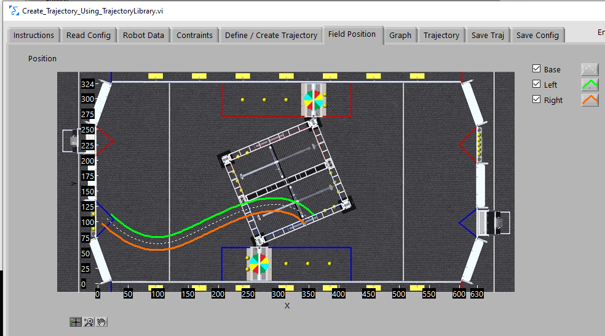
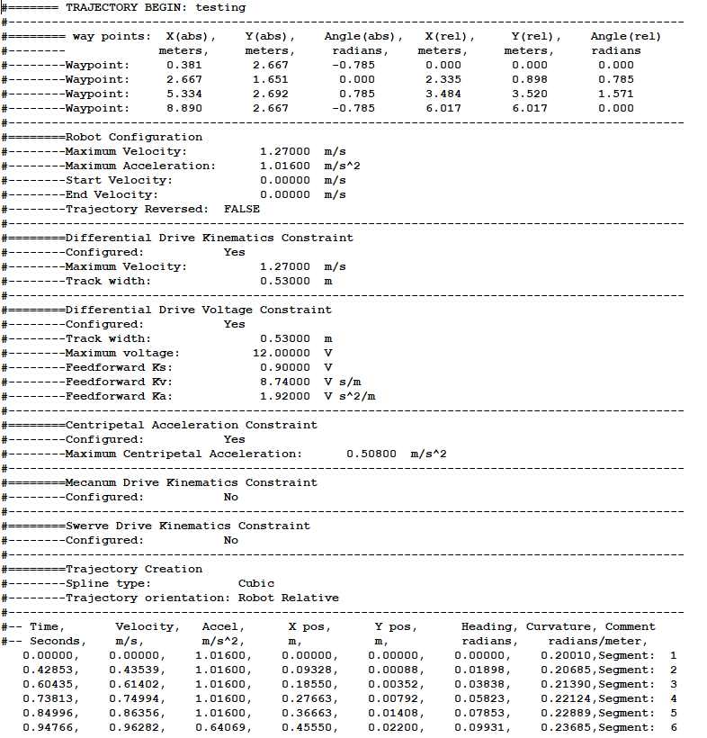
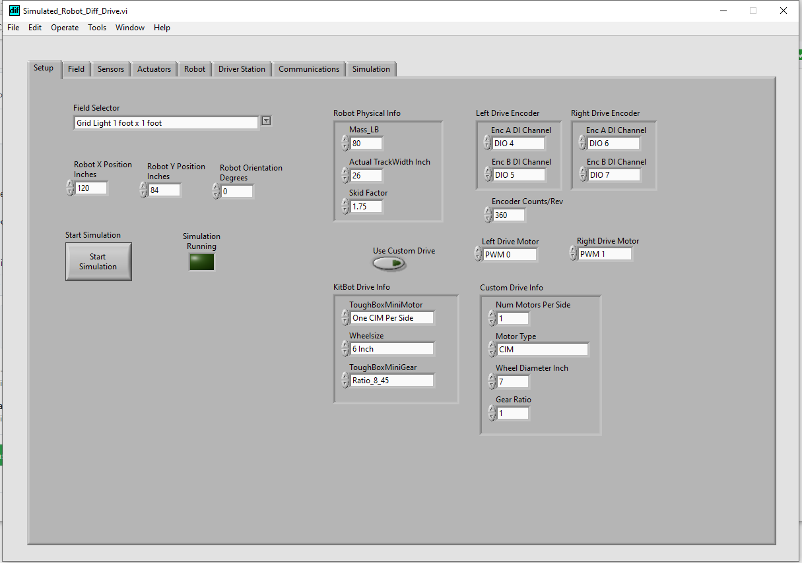

Sample screen shots


Sample CSV trajectory file

Create/Edit PathFinder Differential Drive Trajectory
Create a trajectory using Jaci Brunning's Pathfinder library for a robot using a "differential drive" and write it to a CSV (comma separated value) file that can be used by the WPILib LabVIEW Math library.
More information on Pathfinder can be found here https://github.com/JaciBrunning/Pathfinder
One of the biggest differences between this Trajectory Library and Pathfinder is that Pathfinder contains acceleration limiting (jerk) that does not exist in the other available libraries.
sample trajectory file

Create/Edit PathFinder Swerve Drive Trajectory
Create a trajectory using Jaci Brunning's Pathfinder library for a robot using a "swerve drive" and write it to a CSV (comma separated value) file that can be used by the WPILib LabVIEW Math library.
More information on Pathfinder can be found here https://github.com/JaciBrunning/Pathfinder
One of the biggest differences between this Trajectory Library and Pathfinder is that Pathfinder contains acceleration limiting (jerk) that does not exist in the other available libraries.
sample trajectory file
Convert Traject JSON file to CSV
This utility reads a JSON file created by the Trajectory Creation utility, PathWeaver, PathPlanner, or other WPILib compatible tool and converts it to a CSV file that can be used by the WPILib LabVIEW Math library (The WPILib LabVIEW math library can also use the JSON file directly.)
Convert Traject CSV file to JSON
This utility reads a CSV file created by the Trajectory Creation utility and converts it to a JSON file that can be used by the WPILib C++/Java library. (The WPILib LabVIEW math trajectory creation tool can also write JSON files directly.)
Romi Robot Simulator
Simulate a Differential Drive robot.
Differential Drive Simulator
Simulate a Differential Drive robot. This allows for testing of drive code and execution of trajectories.
